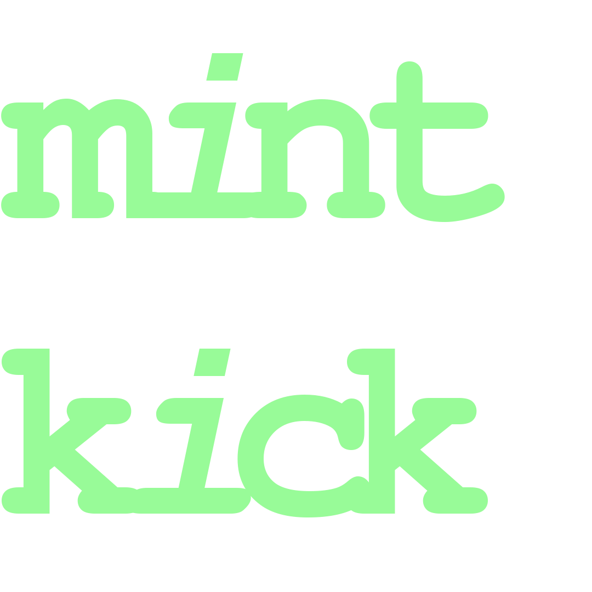
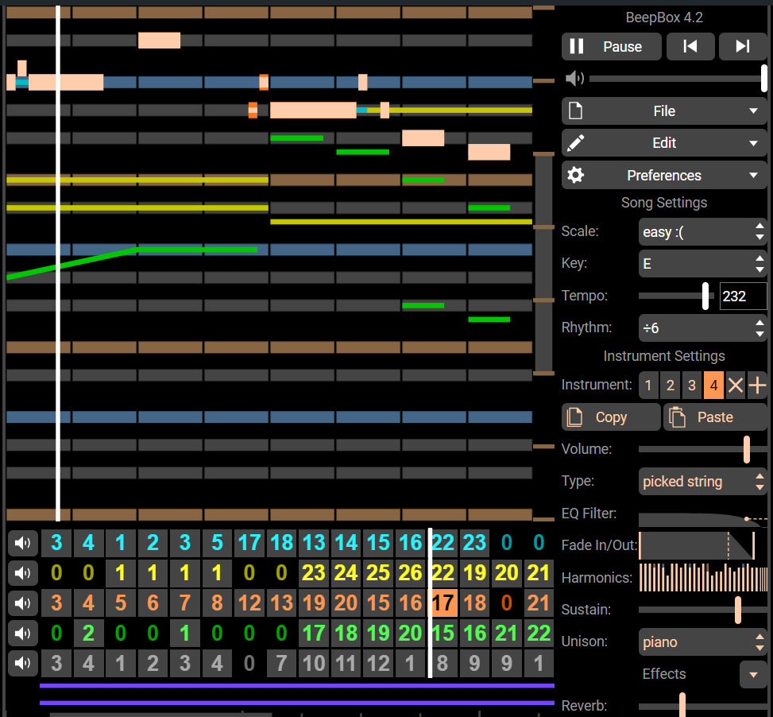

Where I Am Now
The music software I currently use the most is a browser-based platform called BeepBox. With it, I can write both with the orchestral sounds I've wanted to and with those classic retro tones of video games. The instrument editor is really versatile for synthesizing both of those kinds of sounds, too! BeepBox was actually something I played with many years ago back in my DefleMask days and had almost forgotten about. Since then it has been updated a few times, and I've come to appreciate it more. Lately I've been dipping my toes into MuseScore. Updates on that will come as I have them. (^–^)
